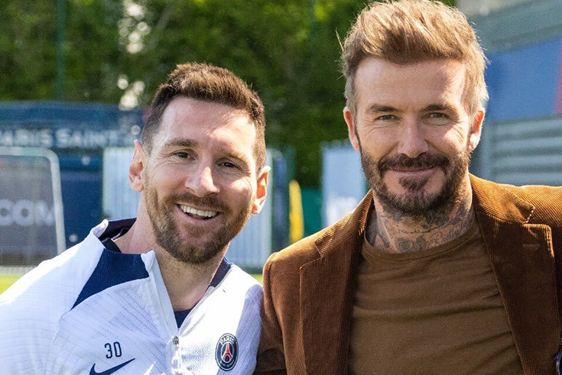

Messi explicó su decisión de irse al Inter Miami: "Quiero pensar más en mi familia"

"Pensar en mí, en mi familia...". Los últimos días no fueron fáciles para Lionel Messi. A pesar de haber ganado todo a nivel clubes y de ser un campeón del mundo con la Selección Argentina, decidir el próximo paso en su carrera no fue sencillo y más cuando entre los interesados aparecía un club como Barcelona.
Pensó en su entorno, en el futuro de sus mujer y sus hijos y confirmó lo que ya era un secreto a voces:. lo que se venía anunciando en Olé desde la semana pasada: seguirá su carrera el Inter Miami, donde firmará por dos años. Y fue crítico al explicar por qué no se dio su vuelta a España.
"Tenía muchas ganas, mucha ilusión de poder volver a Barcelona, pero después de haber vivido lo que viví y la salida que tuve, no quería volver a estar otra vez en la misma situación: esperar a ver qué iba a pasar y dejar mi futuro en mano de otro. Tenía miedo a que volviera a pasar lo mismo y andar a las corridas como pasó, que me tuve que venir a París a estar en un hotel mucho tiempo con mi familia, con mis hijos yendo al colegio", reconoció en medio de una fuerte confesión sobre su paso por el PSG.